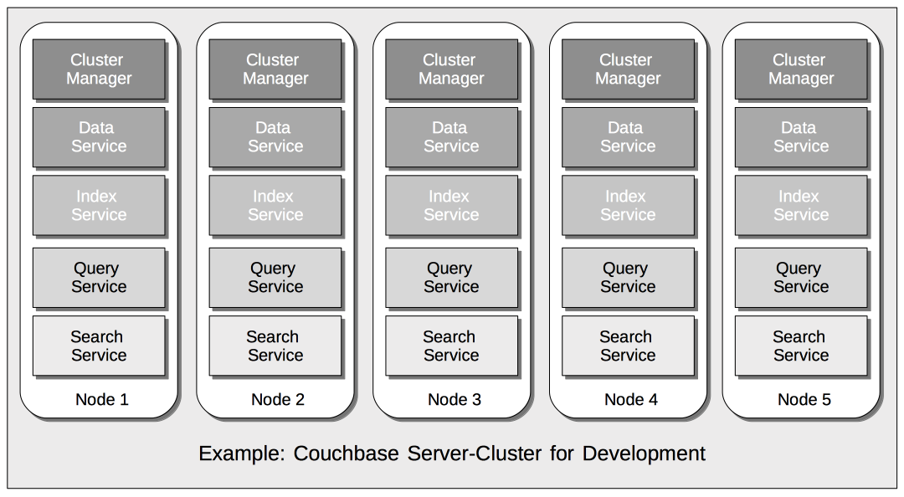

Overview
A high-level summary of Couchbase Server technology, and an overview of information provided by other pages in this section.
Introduction to Couchbase Server
Couchbase Server is an open source, distributed data-platform. It stores data as items, each of which has a key and a value. Sub-millisecond data operations are provided by powerful services for querying and indexing, and by a feature-rich, document-oriented query-language, N1QL. Multiple instances of Couchbase Server can be combined into a single cluster. A Cluster Manager program coordinates all node-activities, and provides a simple, cluster-wide interface to all clients. Cluster administration is supported by a graphical, web-based administration console; as well as by REST and command-line interfaces. Individual nodes can be added, removed, and replaced as appropriate, with no down-time required for the cluster as a whole.
Data can be retained either in memory only, or in both memory and storage, as judged appropriate by the administrator. Data can be replicated across the nodes of the cluster, to ensure that node-loss (or even rack-loss) does not entail data-loss. Data items can also be selectively replicated across data centers; for the purpose either of backup only, or of simultaneous, multi-geo application-access.
Couchbase Server provides multiple Services. These can be deployed, maintained, and provisioned independently of one another, so as to allow Multi-Dimensional Scaling. For example, a development environment running the Couchbase Data, Index, Query, and Search Services might permit an instance of each on every node of a five-node cluster:

Such a deployment might indeed be well-suited to a pure development context; with little or no distinction required between individual services, in terms of workloads, priorities, and corresponding resource-allocations. However, the same cluster, when moved to production, might require a more appropriately tuned service-configuration, such as the following:

This production deployment would therefore anticipate a greater workload being placed on the Data and Index Services than on the Query and Search.
The full list of services provided is as follows:
-
Data: Supports the storing, setting, and retrieving of data-items, specified by key.
-
Query: Parses queries specified in the N1QL query-language, executes the queries, and returns results. The Query Service interacts with both the Data and Index services.
-
Index: Creates indexes, for use by the Query Service.
-
Search: Creates indexes specially purposed for Full Text Search. This supports language-aware searching; allowing users to search for, say, the word beauties, and additionally obtain results for beauty and beautiful.
-
Analytics: Supports join, set, aggregation, and grouping operations; which are expected to be large, long-running, and highly consumptive of memory and CPU resources.
-
Eventing: Supports near real-time handling of changes to data: code can be executed both in response to document-mutations, and as scheduled by timers.
-
Backup: Supports both the scheduling and the immediate execution of full and incremental data backups, either for specific individual buckets, or for all buckets on the cluster. Also allows the scheduling and immediate execution of merges of previously made backups.
Additional Overview Information
Further information on Couchbase Server’s technology high-points and business benefits can be found in Couchbase Server.
About This Section
This section of the Couchbase documentation-set allows the administrator or developer to learn about the principal features of Couchbase Server at an architectural and conceptual level. The contents are organized as follows:
-
Data: Couchbase Server stores data as items. Each item consists of a key, by which the item is referenced; and an associated value, which must be either binary or a JSON document.
See Data for information.
-
Buckets, Memory, and Storage: Items are stored in named Buckets; some being kept only in memory, others both in memory and on disk.
See Buckets, Memory, and Storage for information.
-
Services and Indexes: Services can be deployed to support different forms of data-access: for example, the Data Service allows items to be retrieved by key; while the Query Service allows them to be retrieved by means of queries, designed in the N1QL query-language. Individual services can be configured to run across multiple cluster-nodes, allowing high-priority workloads to be distributed and scaled appropriately. Indexes support services, by enabling high-performance access to data.
See Services and Indexes for information.
-
Clusters and Availability: A single node running Couchbase Server is considered a cluster of one node. As successive nodes are initialized, each can be configured to join the existing cluster.
Across the nodes of each cluster, Couchbase data is evenly distributed and replicated: nodes can be removed, and node-failure handled, without data-loss. Data can be selected for replication across clusters residing in different data centers, to ensure high availability.
See Clusters and Availability for information.
-
Security: Couchbase Server can be rendered highly secure, so as to preserve the privacy and integrity of data, and account for access-attempts. The security facilities provided cover areas including Authentication, Authorization, and Auditing.
See Security for information.
For detailed information on practical administration procedures, see the Overview provided for management documentation.
Additional Documentation
Use the navigation bar at the left, to access additional documentation, covering other aspects of Couchbase technology; including installation, development, and integration.